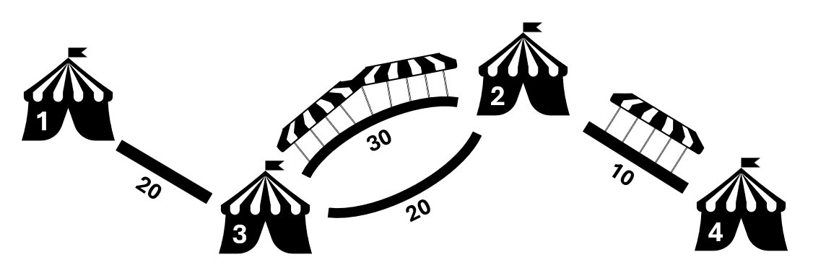

Untuk liburan yang akan datang, Pak Dengklek memutuskan untuk berjalan-jalan di Jatim Park.
Jatim Park memiliki $N$ wahana, dinomori dari $1$ sampai $N$, dan wahana-wahana ini dihubungi oleh $M$ jalan setapak, dinomori dari $1$ sampai $M$. Jalan setapak $i$ menghubungkan wahana $U_i$ dan $V_i$ secara dua arah, dan memerlukan waktu $W_i$ detik untuk berjalan melaluinya. Terdapat dua jenis jalan setapak yang dideskripsikan oleh $Z_i$ sebagai berikut.
Di tengah musim penghujan ini, Pak Dengklek lupa membawa payung, sehingga Pak Dengklek mengandalkan $Q$ prakiraan cuaca. Saat ini (detik ke-$0$), cuaca sedang cerah. Prakiraan cuaca $j$ mengatakan hujan akan mulai turun pada detik ke-$T_j$ dan akan terus turun tanpa berhenti. Agar tidak kehujanan ketika hujan turun, Pak Dengklek hanya bisa melalui jalan beratap, atau berteduh di wahana mana pun. Dengan kata lain, Pak Dengklek tidak dapat berada di tengah jalan tidak beratap ketika hujan turun.
Pak Dengklek sekarang berada di wahana $1$ dan ingin mengunjungi wahana $N$. Apabila Pak Dengklek mengikuti prakiraan cuaca $j$, yaitu hujan mulai turun di detik ke-$T_j$, hitunglah waktu tempuh tersingkat untuk mencapai tujuan tanpa kehujanan, atau laporkan bahwa tujuan tidak mungkin tercapai.
Masukan diberikan dalam format berikut:
N M U1 V1 W1 Z1 U2 V2 W2 Z2 ⋮ UM VM WM ZM Q T1 T2 ⋮ TQ
Keluarkan $Q$ baris.
Baris ke-$j$ berisi sebuah bilangan bulat yang menyatakan waktu tempuh tersingkat dari wahana $1$ ke wahana $N$ apabila hujan mulai turun di detik ke-$T_j$.
Jika wahana $N$ tidak dapat tercapai, keluarkan -1.
4 4 1 3 20 1 2 3 30 2 2 3 20 1 2 4 10 2 3 100 20 1
50 60 -1
Jatim Park pada masukan dapat diilustrasikan sebagai berikut.

Pada prakiraan cuaca pertama, $T_1 = 100$. Pak Dengklek dapat melewati jalan $1$, $3$, lalu $4$, dan mencapai tujuan dalam waktu $50$ detik sebelum hujan turun.
Pada prakiraan cuaca kedua, $T_2 = 20$. Pak Dengklek dapat berjalan dari wahana $1$ ke wahana $2$ dengan satu-satunya jalan dalam $20$ detik, tepat sebelum hujan turun. Untuk seterusnya, Pak Dengklek harus berjalan melalui jalan beratap, dan mencapai tujuan dengan total waktu $60$ detik.
Pada prakiraan cuaca ketiga, $T_3 = 1$.
Satu-satunya jalan yang bisa Pak Dengklek lalui pada awalnya memerlukan waktu $20$ detik, dan hujan sudah akan turun sehingga tidak bisa digunakan.
Karena Pak Dengklek tidak bisa mencapai tujuan, maka Anda harus mengeluarkan -1.